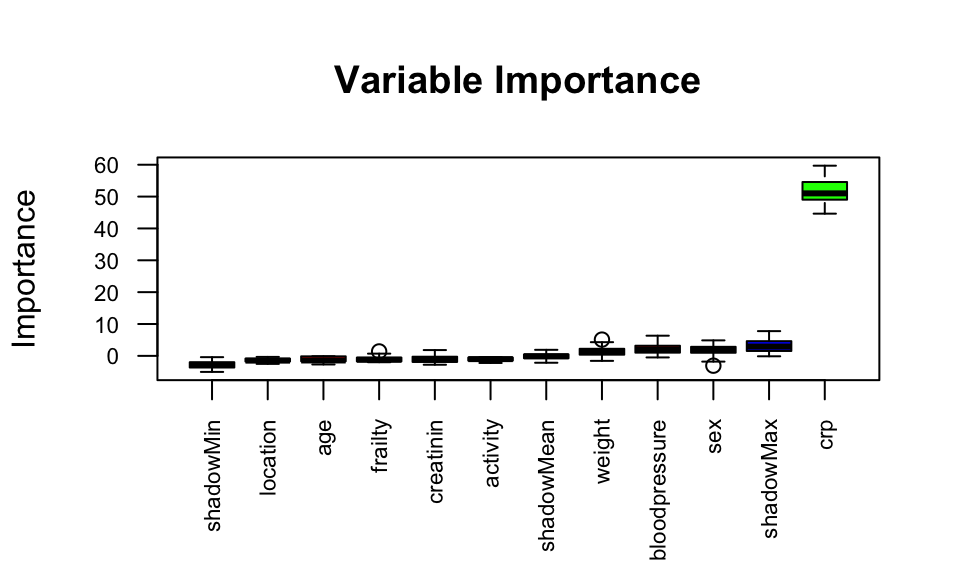

35 Variablenselektion
Version vom October 31, 2022 um 10:48:27

35.1 Theoretischer Hintergrund
Die Selektion von Variablen in einem Modell. Ein schwieriges Thema. Entweder kenne ich mein Experiment und habe das Experiment so geplant, dass nur die bedeutenden Variablen mit in dem Experiment sind oder ich habe keine Ahnung. Gut, dass ist überspitzt und gemein formuliert. Wir wollen uns in diesem Kapitel den Fall anschauen, dass du sehr viele Variablen \(x\) erhoben hast und nun statistisch bestimmen willst, welche Variablen nun mit in das finale Modell sollen. Achtung, ich spreche hier nicht von einem Blockdesign oder aber einem Feldexperiment. Da hat die Variablenselektion nichts zu suchen. Daher tritt der Fall der Variablenselektion eher in dem Feld Verhaltensbiologie oder aber auch Ökologie auf. Ebenfalls kann die Anwendung in automatisch erfassten Daten einen Sinn machen. Wir nutzen dann die Variablenselektion (eng. feature selection) zu Dimensionsreduktion des Datensatzes. Der Datensatz soll damit einfacher sein… ob der Datensatz das damit auch wird, ist wieder eine andere Frage.

In diesem Kapitel prügeln wir aber einen statistischen Engel. Wir werden hier mal schauen müssen, was alles geht und was nicht. Variablen Selektion ist faktisch nicht ein Kapitel sondern ein Regal(kilo)meter voll mit Büchern.
Zu der Frage welches Verfahren denn nun das richtige Verfahren zur Selektion von Variablen ist, gibt es die Standardantwort in der Statistik: Es kommt auf die Fragestellung an…. Oder aber was ist wie gut implementiert, dass wir das Verfahren einigermaßen gut nutzen können. Wir gehen daher von einfach zu kompliziert und du musst dann schauen, was du nutzen willst und kannst. Wir müssen zum Beispiel unterscheiden, welcher Verteilung das Outcome \(y\) folgt. Wenn wir ein normalverteiltes \(y\) haben, dann haben wir andere Möglichkeiten, als wenn wir uns ein poissonverteiltes oder binominalverteiltes \(y\) anschauen.
Das R Paket olsrr erlaubt eine weitreichende Variablen Selektion, wenn ein normalverteiltes Outcome \(y\) vorliegt.
Im Folgenden will ich kurz die fünf Mythen der Variablenselektion von Heinze und Dunkler (2017) zusammenfassen. Wie immer ersetzt meine deutsche Zusammenfassung und Auswahl nicht das eigenständige Lesen der englischen Orgnialquelle, wenn du die Informationen in deiner Abschlussarbeit zitieren willst.
- Die Anzahl der Variablen in einem Modell sollte reduziert werden, bis es 10 Ereignisse pro Variable gibt. Simulationsstudien haben gezeigt, dass multivariable Modelle bei zu niedrigen Verhältnissen von Ereignissen bzw. Beobachtungen pro Variable (eng events per variable, abk. EPV) sehr instabil werden. Aktuelle Empfehlungen besagen, dass je nach Kontext mindestens 5-15 EPV verfügbar sein sollten. Wahrscheinlich sind sogar viel höhere Werte wie 50 EPV erforderlich, um annähernd stabile Ergebnisse zu erzielen.
- Nur Variablen mit nachgewiesener Signifikanz des univariaten Modells sollten in ein Modell aufgenommen werden. Die univariable Vorfilterung trägt nicht zur Stabilität des Auswahlprozesses bei, da sie auf stochastischen Quanten beruht und dazu führen kann, dass wichtige Anpassungsvariablen übersehen werden.
- Nicht signifikante Effekte sollten aus einem Modell entfernt werden. Regressionskoeffizienten hängen im Allgemeinen davon ab, welche anderen Variablen in einem Modell enthalten sind, und ändern folglich ihren Wert, wenn eine der anderen Variablen in einem Modell weggelassen wird.
- Der berichtete P-Wert quantifiziert den Typ-I-Fehler einer fälschlich ausgewählten Variablen. Ein P-Wert ist ein Ergebnis der Datenerhebung und -analyse und quantifiziert die Plausibilität der beobachteten Daten unter der Nullhypothese. Daher quantifiziert der P-Wert nicht den Fehler vom Typ I. Es besteht auch die Gefahr einer falschen Eliminierung von Variablen, deren Auswirkungen durch die bloße Angabe des endgültigen Modells eines Variablenauswahlverfahrens überhaupt nicht quantifiziert werden können.
- Variablenauswahl vereinfacht die Analyse. Für das jeweilige Problem muss eine geeignete Variablenauswahlmethode gewählt werden. Statistiker haben die Rückwärtselimination als die zuverlässigste unter den Methoden empfohlen, die sich mit Standardsoftware leicht durchführen lassen. Eine Auswahl ist eine “harte Entscheidung”, die aber oft auf vagen Größen beruht. Untersuchungen zur Modellstabilität sollten jede angewandte Variablenauswahl begleiten, um die Entscheidung für das schließlich berichtete Modell zu rechtfertigen oder zumindest die mit der Auswahl der Variablen verbundene Unsicherheit zu quantifizieren.
Im Weiteren sei auch noch auf Heinze, Wallisch, und Dunkler (2018) und Talbot und Massamba (2019) verwiesen. Beide Veröffentlichungen liefern nochmal einen fundierten Block auf die Variablenselektion. Wiederum ist das natürlich nur ein winziger Ausschnitt aus der Literatur zur Variablenselektion. Im Zweifel einfach einmal bei Google Scholar nach Variablenselektion suchen und schauen was so in dem Feld der eigenen Forschung alles gemacht wird.
“Variable selection should always be accompanied by sensitivity analyses to avoid wrong conclusions.” (Heinze und Dunkler 2017, p. 9)
Nachdem wir Variablen aus unseren Daten entfernt haben, ist es üblich noch eine Sensitivitätsanalysen durchzuführen. Wir Vergleich dann das selektierte Modell mit anderen Modellen. Oder wir wollen die Frage beantworten, was hat eigentlich meine Variablenselektion am Ergebnis geändert? Habe ich eine wichtige Variable rausgeschmissen? Das machen wir dann gesammelt in dem Kapitel 38 zu den Sensitivitätsanalysen.
35.2 Genutzte R Pakete für das Kapitel
Wir wollen folgende R Pakete in diesem Kapitel nutzen.
pacman::p_load(tidyverse, magrittr, conflicted,
MASS, ranger, Boruta, broom,
scales, olsrr)
conflict_prefer("select", "dplyr")
conflict_prefer("filter", "dplyr")Am Ende des Kapitels findest du nochmal den gesamten R Code in einem Rutsch zum selber durchführen oder aber kopieren.
35.3 Daten
Um die Variablenselektion einmal durchzuführen nurtzen wir zwei Datensätze. Zum einen den Datensatz zu den Kichererbsen in Brandenburg mit einem normalverteilten Outcome \(y\) mit dryweight. Wir laden wieder den Datensatz in R und schauen uns einmal die Daten in Tabelle 35.1 als Auszug aus dem Tabellenblatt an.
chickpea_tbl <- read_excel("data/chickpeas.xlsx") Wir sehen, dass wir sehr viele Variablen vorleigen haben. Sind denn jetzt alle Variablen notwendig? Oder können auch ein paar Variablen raus aus dem Modell. So viele Beobachtungen haben wir mit \(n = 95\) ja nicht vorliegen. Daher wollen wir an diesem Datensatz die Variablenselektion unter der Annahme eines normalverteilten \(y\) durchgehen.
| temp | rained | location | no3 | fe | sand | forest | dryweight |
|---|---|---|---|---|---|---|---|
| 25.26 | high | north | 5.56 | 4.43 | 63 | >1000m | 255.4 |
| 21.4 | high | northeast | 9.15 | 2.58 | 51.17 | <1000m | 217.55 |
| 27.84 | high | northeast | 5.57 | 2.19 | 55.57 | <1000m | 232.52 |
| … | … | … | … | … | … | … | … |
| 29.04 | low | north | 5.64 | 2.87 | 53.27 | >1000m | 228.58 |
| 24.11 | high | northeast | 4.31 | 3.66 | 63 | >1000m | 251.75 |
| 28.88 | low | northeast | 7.92 | 2 | 65.75 | <1000m | 274.46 |
Was wir auch noch wissen, ist wie die Effekte in den Daten wirklich sind. Die Daten wurden ja künstlich erstellt, deshalb hier die Ordnung der Effektstärke für jede Variable. Im Prinzip müsste diese Reihenfolge auch bei der Variablenselektion rauskommen. Schauen wir mal, was wir erhalten.
\[ y = 3 * sand + 2 * temp + 1.5 * rained - 1.2 * forest + 1.1 * no3 \]
Viele Beispiele laufen immer unter der Annahme der Normalverteilung. Deshalb als zweites Beispiel nochmal die Daten von den infizierten Ferkeln mit einem binomialverteilten Outcome \(y\) mit infected. Auch hier können wir uns den Auszug der Daten in Tabelle 35.2 anschauen.
pig_tbl <- read_excel("data/infected_pigs.xlsx") Das schöne an diesem Datensatz ist jetzt, dass wir mit \(n = 412\) Beobachtungen sehr viele Daten vorliegen haben. Daher können wir auch alle Methoden gut verwenden udn haben nicht das Problem einer zu geringen Fallzahl.
| age | sex | location | activity | crp | frailty | bloodpressure | weight | creatinin | infected |
|---|---|---|---|---|---|---|---|---|---|
| 61 | male | northeast | 15.31 | 22.38 | robust | 49.88 | 16.94 | 3.07 | 1 |
| 53 | male | northwest | 13.01 | 18.64 | robust | 58.2 | 17.95 | 4.88 | 0 |
| 66 | female | northeast | 11.31 | 18.76 | robust | 56.8 | 19.02 | 3.98 | 0 |
| … | … | … | … | … | … | … | … | … | … |
| 61 | male | northwest | 15.26 | 23.1 | robust | 58.5 | 18.23 | 2.73 | 1 |
| 59 | female | north | 13.13 | 20.23 | pre-frail | 57.33 | 17.21 | 5.42 | 1 |
| 63 | female | north | 10.01 | 19.89 | robust | 55.85 | 17.76 | 6.18 | 1 |
Auch in diesem Beispiel wurden die Daten von mir mit folgenden Effekten generiert. Schauen wir mal, was die Variablenselektion bei der hohen Fallzahl mit den Variablen macht bzw. welche Sortierung am Ende rauskommt.
\[ y = 2 * crp + 0.5 * sex + 0.5 * frailty + 0.2 * bloodpressure + 0.05 * creatinin + 0.01 * weight \]
Damit haben wir unsere beiden Beispiel und jetzt gehen wir mal eine Auswahl an Methoden zur Variablenselektion durch. Besonders hier, haltet den statistsichen Engel nah bei euch. Es wird leider etwas ruppig für den statistischen Engel.
35.4 Methoden der Variablenselektion
In den folgenden Abschnitten wollen wir uns eine Reihe an Methoden anschauen um eine Variablenselektion durchzuführen. Dabei gehen wir von einfach nach komplex. Wobei das komplex eher die Methode und nicht die Anwendung meint. Wir nutzen R Pakete und gehen nicht sehr ins Detail wie der Algorithmus jetzt die Auswahl trifft. Für den Hintergrund sind dann die Verweise auf die anderen Kapitel.
35.4.1 Per Hand
Manchmal ist der Anfang auch das Ende. Wir müssen ja gar keinen Algorithmus auf unsere Daten loslassen um eine Variablenselektion durchzuführen. Deshalb möchte ich gleich den ersten Abschnitt mit einem Zitat von Heinze und Dunkler (2017) beginnen.
“Oft gibt es keinen wissenschaftlichen Grund, eine (algorithmische) Variablenauswahl durchzuführen. Insbesondere erfordern Methoden der (algorithmische) Variablenselektion einen viel größeren Stichprobenumfang als die Schätzung eines multiplen Modells mit einem festen Satz von Prädiktoren auf der Grundlage (klinischer) Erfahrung.” (Übersetzt und ergänzt nach Heinze und Dunkler 2017, p. 9)
Fazit dieses kurzen Abschnitts. Wir können auf alles Folgende einfach verzichten und uns überlegen welche Variablen sinnvollerweise mit ins Modell sollen und das mit unserem Expertenwissen begründen. Gut, und was ist, wenn ich kein Experte bin? Oder wir aber wirklich Neuland betreten? Dann können wir eine Reihe anderer Verfahren nutzen um uns algortimisch einer Wahrheit anzunähern.
35.4.2 Univariate Vorselektion
“Obwohl die univariable Vorfilterung nachvollziehbar und mit Standardsoftware leicht durchführbar ist, sollte man sie besser ganz vergessen, da sie für die Erstellung multivariabler Modelle weder Voraussetzung noch von Nutzen ist.” (Übersetzt nach Heinze und Dunkler 2017, p. 8)
chickpea_tbl %>%
select(-dryweight) %>%
map(~glm(dryweight ~ .x, data = chickpea_tbl, family = gaussian)) %>%
map(tidy) %>%
map(filter, term != "(Intercept)") %>%
map(select, -term, -std.error, -statistic) %>%
bind_rows(.id="term") %>%
arrange(p.value) %>%
mutate(p.value = pvalue(p.value),
estimate = round(estimate, 2))# A tibble: 8 × 3
term estimate p.value
<chr> <dbl> <chr>
1 sand 2.93 <0.001
2 location -10.2 0.028
3 no3 2.06 0.080
4 temp 1.08 0.090
5 rained 3.96 0.255
6 location -4.02 0.256
7 fe 1.31 0.386
8 forest 2.81 0.403 pig_tbl %>%
select(-infected) %>%
map(~glm(infected ~ .x, data = pig_tbl, family = binomial)) %>%
map(tidy) %>%
map(filter, term != "(Intercept)") %>%
map(select, -term, -std.error, -statistic) %>%
bind_rows(.id="term") %>%
arrange(p.value) %>%
mutate(p.value = pvalue(p.value),
estimate = round(estimate, 2))# A tibble: 12 × 3
term estimate p.value
<chr> <dbl> <chr>
1 crp 1.01 <0.001
2 bloodpressure 0.06 0.058
3 location -0.35 0.192
4 sex 0.23 0.258
5 location -0.27 0.360
6 activity 0.04 0.474
7 age 0.02 0.489
8 location -0.19 0.528
9 frailty -0.12 0.719
10 weight 0.02 0.728
11 frailty 0.08 0.796
12 creatinin -0.01 0.857 35.4.3 Sonderfall Gaussian linear Regression
chickenpea_fit <- lm(dryweight ~ temp + rained + location + no3 + fe + sand + forest,
data = chickpea_tbl)ols_step_all_possible(chickenpea_fit) %>%
as_tibble %>%
arrange(desc(adjr)) %>%
filter(n <= 4) %>%
select(predictors, adjr, aic) # A tibble: 98 × 3
predictors adjr aic
<chr> <dbl> <dbl>
1 temp rained no3 sand 0.873 598.
2 temp location no3 sand 0.873 599.
3 temp no3 sand 0.873 597.
4 temp no3 sand forest 0.872 598.
5 temp no3 fe sand 0.872 598.
6 temp rained fe sand 0.865 604.
7 temp rained sand 0.865 603.
8 temp rained sand forest 0.864 605.
9 temp rained location sand 0.864 606.
10 temp location fe sand 0.864 606.
# … with 88 more rows
35.4.4 step und setpAIC
fit <- glm(infected ~ age + sex + location + activity + crp + frailty + bloodpressure + weight + creatinin,
data = pig_tbl, family = binomial)
fit_step <- stepAIC(fit, direction = "both")Start: AIC=425.65
infected ~ age + sex + location + activity + crp + frailty +
bloodpressure + weight + creatinin
Df Deviance AIC
- location 3 402.730 422.730
- frailty 2 400.809 422.809
- creatinin 1 399.757 423.757
- weight 1 400.761 424.761
- activity 1 400.818 424.818
- age 1 400.867 424.867
<none> 399.651 425.651
- sex 1 407.604 431.604
- bloodpressure 1 407.637 431.637
- crp 1 533.678 557.678
Step: AIC=422.73
infected ~ age + sex + activity + crp + frailty + bloodpressure +
weight + creatinin
Df Deviance AIC
- frailty 2 403.886 419.886
- creatinin 1 402.799 420.799
- activity 1 403.671 421.671
- weight 1 403.750 421.750
- age 1 404.047 422.047
<none> 402.730 422.730
+ location 3 399.651 425.651
- sex 1 410.292 428.292
- bloodpressure 1 410.767 428.767
- crp 1 535.733 553.733
Step: AIC=419.89
infected ~ age + sex + activity + crp + bloodpressure + weight +
creatinin
Df Deviance AIC
- creatinin 1 403.912 417.912
- activity 1 404.723 418.723
- weight 1 404.906 418.906
- age 1 405.048 419.048
<none> 403.886 419.886
+ frailty 2 402.730 422.730
+ location 3 400.809 422.809
- sex 1 411.668 425.668
- bloodpressure 1 412.318 426.318
- crp 1 536.682 550.682
Step: AIC=417.91
infected ~ age + sex + activity + crp + bloodpressure + weight
Df Deviance AIC
- activity 1 404.764 416.764
- weight 1 404.945 416.945
- age 1 405.088 417.088
<none> 403.912 417.912
+ creatinin 1 403.886 419.886
+ frailty 2 402.799 420.799
+ location 3 400.855 420.855
- sex 1 411.839 423.839
- bloodpressure 1 412.436 424.436
- crp 1 536.819 548.819
Step: AIC=416.76
infected ~ age + sex + crp + bloodpressure + weight
Df Deviance AIC
- weight 1 405.763 415.763
- age 1 406.094 416.094
<none> 404.764 416.764
+ activity 1 403.912 417.912
+ creatinin 1 404.723 418.723
+ frailty 2 403.759 419.759
+ location 3 401.919 419.919
- sex 1 412.386 422.386
- bloodpressure 1 413.160 423.160
- crp 1 536.830 546.830
Step: AIC=415.76
infected ~ age + sex + crp + bloodpressure
Df Deviance AIC
- age 1 407.006 415.006
<none> 405.763 415.763
+ weight 1 404.764 416.764
+ activity 1 404.945 416.945
+ creatinin 1 405.709 417.709
+ frailty 2 404.755 418.755
+ location 3 403.003 419.003
- sex 1 412.402 420.402
- bloodpressure 1 413.891 421.891
- crp 1 537.870 545.870
Step: AIC=415.01
infected ~ sex + crp + bloodpressure
Df Deviance AIC
<none> 407.006 415.006
+ age 1 405.763 415.763
+ activity 1 406.037 416.037
+ weight 1 406.094 416.094
+ creatinin 1 406.933 416.933
+ frailty 2 406.140 418.140
+ location 3 404.155 418.155
- sex 1 413.632 419.632
- bloodpressure 1 415.953 421.953
- crp 1 538.126 544.126Test
fit_step
Call: glm(formula = infected ~ sex + crp + bloodpressure, family = binomial,
data = pig_tbl)
Coefficients:
(Intercept) sexmale crp bloodpressure
-27.16112 0.68994 1.04632 0.11413
Degrees of Freedom: 411 Total (i.e. Null); 408 Residual
Null Deviance: 545.64
Residual Deviance: 407.01 AIC: 415.01Test
35.4.5 ranger
fit <- ranger(infected ~ age + sex + location + activity + crp + frailty + bloodpressure + weight + creatinin,
data = pig_tbl, importance = "permutation")
pluck(fit, "variable.importance") %>% sort(decreasing = TRUE) crp weight sex bloodpressure frailty
0.10878115546 0.00465094216 0.00223396685 0.00127699111 0.00051021954
creatinin location activity age
-0.00023285605 -0.00165146706 -0.00421852545 -0.00478395140
35.4.6 boruta
boruta_output <- Boruta(infected ~ age + sex + location + activity + crp + frailty + bloodpressure + weight + creatinin,
data = pig_tbl)
boruta_outputBoruta performed 99 iterations in 3.9302349 secs.
1 attributes confirmed important: crp;
7 attributes confirmed unimportant: activity, age, creatinin, frailty,
location and 2 more;
1 tentative attributes left: bloodpressure;plot(boruta_output, cex.axis=.7, las=2, xlab="", main="Variable Importance") 
tent_boruta <- TentativeRoughFix(boruta_output)
tent_borutaBoruta performed 99 iterations in 3.9302349 secs.
Tentatives roughfixed over the last 99 iterations.
1 attributes confirmed important: crp;
8 attributes confirmed unimportant: activity, age, bloodpressure,
creatinin, frailty and 3 more;